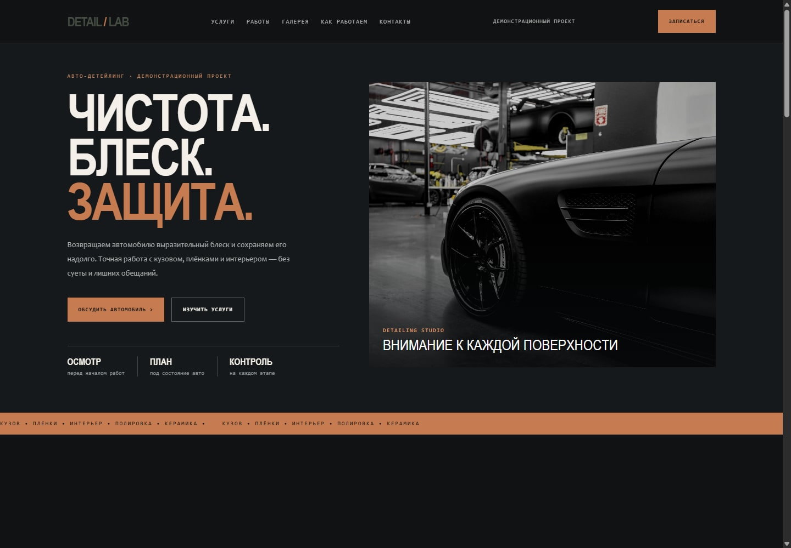
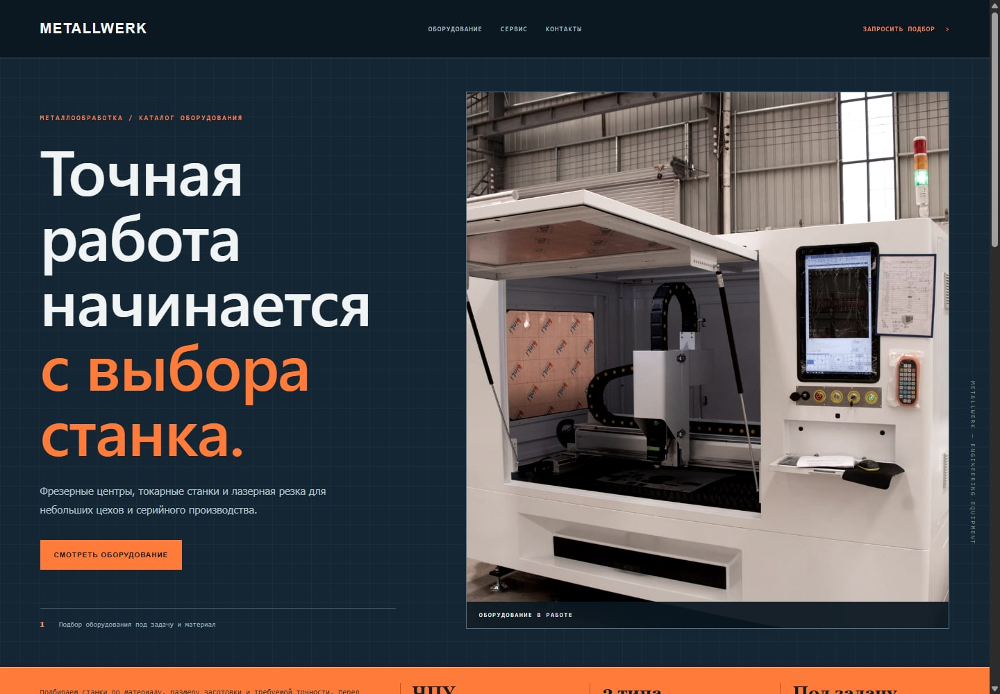
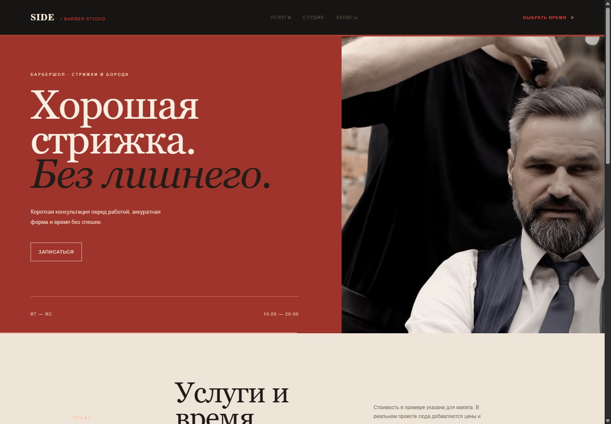
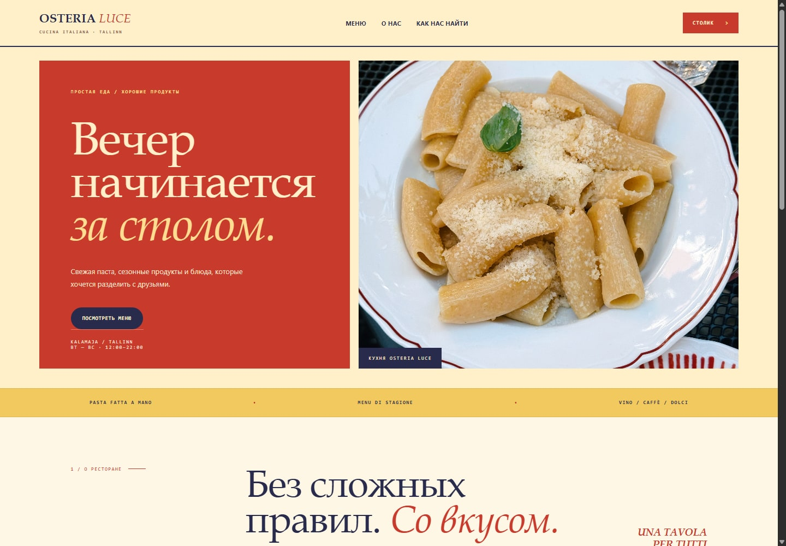
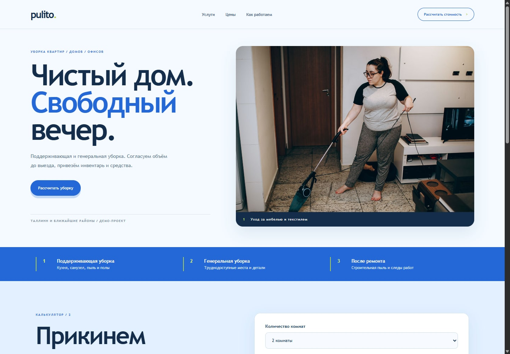

AUTOMOTIVE
DETAIL / LAB
Сайт детейлинг-студии с перечнем услуг, фотогалереей работ и формой запроса.
Открыть сайт ↗
Помогаю понятно показать услуги или товары, рассказать о компании и дать клиенту простой способ связаться. Сначала согласуем страницы и материалы, затем собираю сайт.
Посмотреть проекты ↓Сайт детейлинг-студии с перечнем услуг, фотогалереей работ и формой запроса.
Открыть сайт ↗
Каталог промышленного оборудования: категории, технические параметры и запрос цены по выбранной модели.
Открыть сайт ↗
Сайт барбершопа с прайсом, длительностью услуг и формой выбора даты и времени.
Открыть сайт ↗
Ресторанный сайт с меню по разделам, сезонными позициями и формой предварительного бронирования.
Открыть сайт ↗
Сайт клининговой службы с расчётом предварительной стоимости по числу комнат и дополнительным услугам.
Открыть сайт ↗
Все пять примеров — демонстрационные концепты. Названия компаний, цены, адреса и условия в макетах вымышлены. Формы не отправляют заявки до подключения почты или CRM.
Главная страница, услуги, о компании, контакты и форма заявки.
Категории, характеристики, фильтры и запрос стоимости.
Обновление внешнего вида и корректная работа на мобильных устройствах.
Калькуляторы, фильтры, меню, галереи и формы.
Напишите, чем занимается компания и что должен делать сайт. Я уточню объём работ и предложу подходящий вариант.